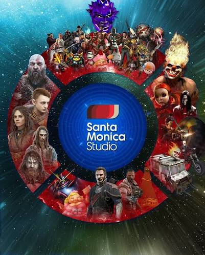
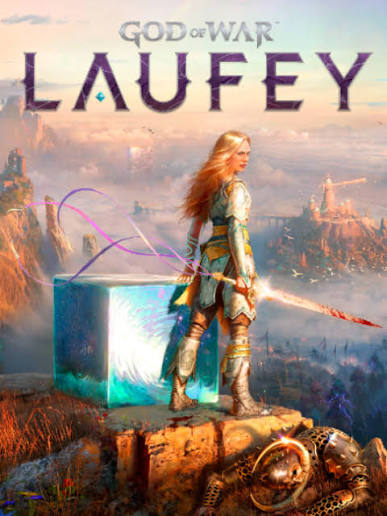

Welcome to Santa Monica Studio. Committed to Greatness.
At Santa Monica Studio, we are a diverse, ambitious, and highly collaborative collective of creators dedicated to pushing the boundaries of interactive entertainment. As a premier first-party developer for PlayStation Studios, our mission is simple yet profound: to craft deeply immersive, narrative-driven experiences that leave an unforgettable mark on players worldwide. Best known as the architects of the critically acclaimed God of War franchise, we believe that great games are built on a foundation of steadfast artistry, technical innovation, and an unwavering commitment to our craft. From our state-of-the-art creative hub in Los Angeles, we continue to foster an open culture of collaboration—empowering world-class developers and pioneering partners alike to build the next generation of industry-defining stories.
Our Legacy: A Portfolio of Passion and Partnership
From our humble beginnings with the futuristic racer Kinetica in 2001, Santa Monica Studio has grown into a powerhouse synonymous with epic storytelling and industry-defining combat. For over two decades, we have poured our hearts into forging the legendary journey of Kratos—evolving the God of War series from its fierce, mythic roots in ancient Greece to the deeply emotional, critically acclaimed Nordic sagas of God of War (2018) and God of War Ragnarök. Yet, our creative footprint extends far beyond the realms of Midgard. Through our dedicated External Development group, we have spent years acting as a proud incubator and collaborative partner for pioneering indie talent. By supporting visionary teams, we’ve helped usher unique, boundary-pushing experiences into the world—including the breathtaking artistery of thatgamecompany’s Journey and Flower, the whimsical mysteries of The Unfinished Swan, and the atmospheric expanse of Everybody's Gone to the Rapture. Whether crafting massive blockbusters in-house or fostering indie innovation from afar, our portfolio is a testament to our belief in the transformative power of play

